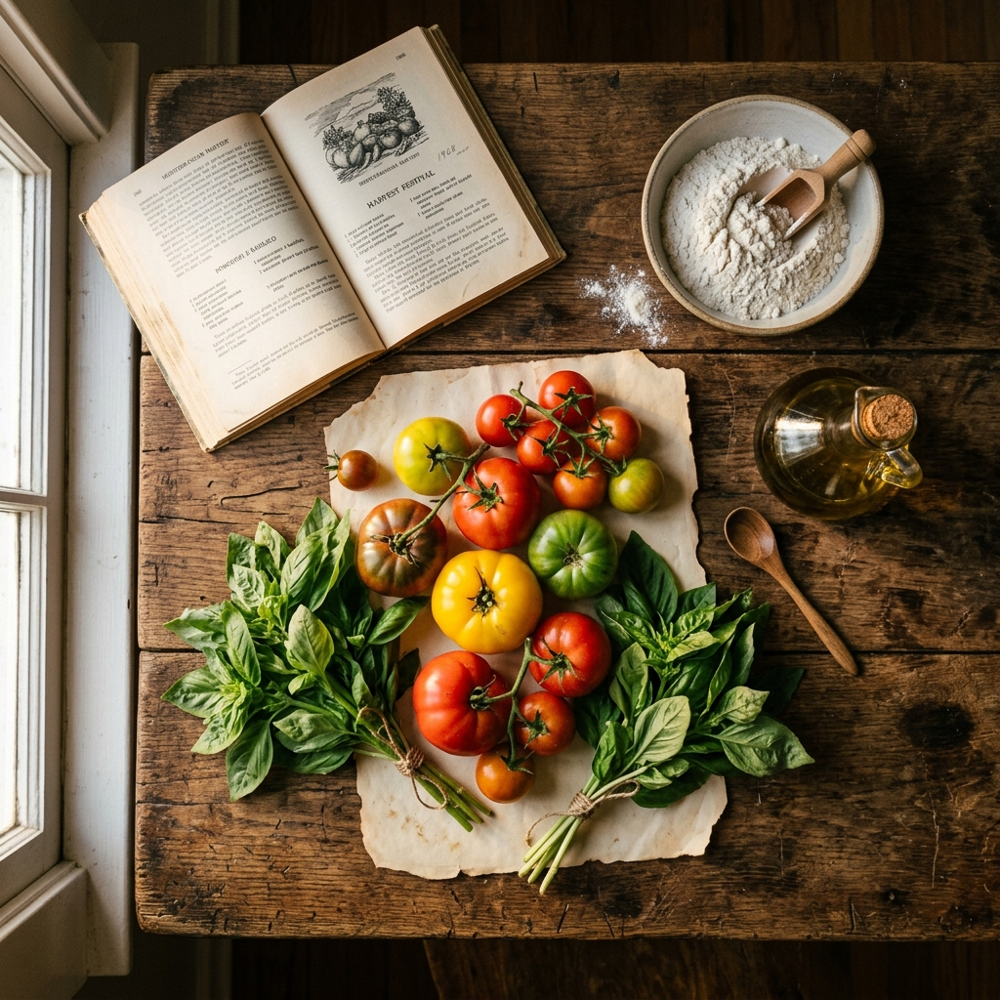

Eccellenze & Scienza
Wagyu: L'Oro Rosso del Giappone
Scopri il segreto della marmorizzazione perfetta e perché questa carne pregiata si scioglie al primo morso.
Leggi di più →Un viaggio narrativo attraverso i secoli, esplorando le radici profonde delle nostre tradizioni culinarie e le storie mai raccontate dietro ogni ingrediente.

Scopri il segreto della marmorizzazione perfetta e perché questa carne pregiata si scioglie al primo morso.
Leggi di più →
Scopri il rito del cocktail più iconico del mondo: tra misteri storici, precisione IBA e il tocco della lemon twist.
Leggi di più →
Dalla Hollywood degli anni '30 alla mixology moderna: scopri la storia del re dei brindisi analcolici e i segreti per l'equilibrio perfetto.
Leggi di più →
Dalle rotte commerciali dell'Oriente alle tavole reali europee, scopriamo come il pepe e la cannella hanno plasmato l'economia globale.
Leggi di più →